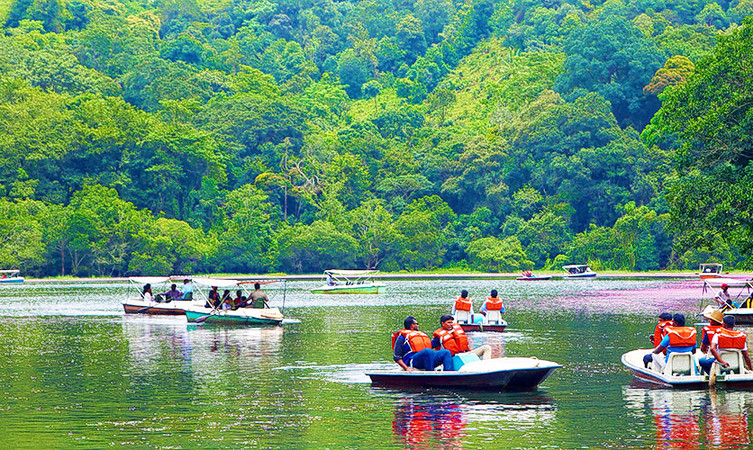

Wayanad adorns the northern tip of Kerala and is among the few areas in the world that have managed to conserve their natural charm and beauty. Teeming with rare flora and fauna, it is considered among the most picturesque locations in Kerala. It is host to a large variety of endemic species. One is surrounded by mist-covered peaks and lush greenery on all sides. The tribals of the area are renowned for their unique customs and the festivals here are true celebrations of the harmony between man and nature. Many prominent resorts have come up in this area as well and provide our visitors with many adventure sports and trekking options in the very palms of nature.
Located in the middle of Kabini river, Kuruva Island is a natural paradise that is replete with diverse flora and fauna in the most beautiful surroundings. It is blessed with evergreen forests all around that makes it a mesmerising picnic spot away from all pollution and noise of the city. One of the most exciting things about Kuruva Island for tourists is their famous boat rides on bamboo rafts. Trekkers also visit Kuruva Island to explore the pristine environment and witness the most exotic species of plants, animals and birds here.
One of the most spellbinding places to visit in Wayanad, Banasura Sagar Dam is a picturesque tourist hotspot. Known for being India’s largest earthen dam, it boasts of extensive natural beauty with beautiful flora and fauna, majestic hills and mesmerising waterfalls. The Banasura Sagar is a photographer’s delight and offers the most beautiful views from the top of the hill. It is also famous among adventure enthusiasts who look forward to thrilling activities like boating, trekking, horse racing and camel rides. For the avid trekkers, Banasura hill peak is hailed as one of the most challenging treks. Along with that Banasura Hill Resort adds to the charm of this place that is known as the only ‘earthen’ resort in the country.
If you’re browsing for the most serene Wayanad tourist places, Pookode Lake should incite your curiosity. Surrounded by the evergreen beauty of Western Ghats and verdant forests, Pookode Lake is a gorgeous freshwater lake. One of the most interesting features of this lake is that it virtually appears to be in the shape of India’s physical map. Boasting of picturesque excellence and a mesmerising ambience, this freshwater lake is the initiating point of Panamaram stream in Kerala. Pookode Lake offers many activities like boating and boasts of a freshwater aquarium, a children’s park and a shopping centre where tourists can empty their pockets on excellent spices and handicrafts.